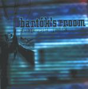

| Artist: | Rigel Michelena |
| Title: | Bartók's Room |
| Label: | Musea FGBG 4377.AR |
| Length(s): | 49 minutes |
| Year(s) of release: | 2001 |
| Month of review: | [10/2001] |
| 1) | Artilugio (florilegio Artefactio) | 8.30 |
| 2) | I | 4.45 |
| 3) | El Ojo-dido | 4.47 |
| 4) | Song For Bartók | 7.00 |
| 5) | Inside | 5.21 |
| 6) | Twiggy Pig | 5.10 |
| 7) | The Last Dodo Bird | 2.36 |
| 8) | Street Jam (jam-eo En La Calle) | 3.30 |
| 9) | Uranus | 5.01 |
| 10) | Final Chat: Colubre | 2.32 |
The next one up is I. This track continues along the same line, but not as groovy. The groove returns on El Ojo-Dido where we also find a funky bass and a meandering harsh sounding guitar as well.
The next one is a song for the cat: it opens with quick fingered acoustic guitar with moody twangings. A piece that a cat might actually like with low warm sounds. We continue with the slow ballad Inside which features guitar and (non-disturbingly) electronic drums.
Twiggy Pig is a rather off-beat track but one in which the groove sounds a bit familiar. The sound continues to be warm and spacious and the rhythms can be quite modern sounding. The bass seems to be the main instrument at first, but later the electric guitar throws in some hectically meandering guitar work best compared with later King Crimson.
The Last Dodo Bird is a rather complex sounding piece with the main role for guitar playing a rather baroque piece in the presence of a low rumbling bass and active percussion. Quite a bit of fiddling around on this one, and because of it the music does not really flow.
Latin percussion abounds on Street Jam, as well as some acoustic strumming and people clapping and shouting. A street atmosphere is being built here.
One of the more focussed track on the album is the rocking Uranus with tense guitar work (a bit of King Crimson, a bit of Holdsworth here). Parts of the track are more relaxed with some wailing keyboards and later some wailing guitar. My personal favourite on the album.
The closer is the short Final Chat, which is more like a Final Scat. I don't like it.